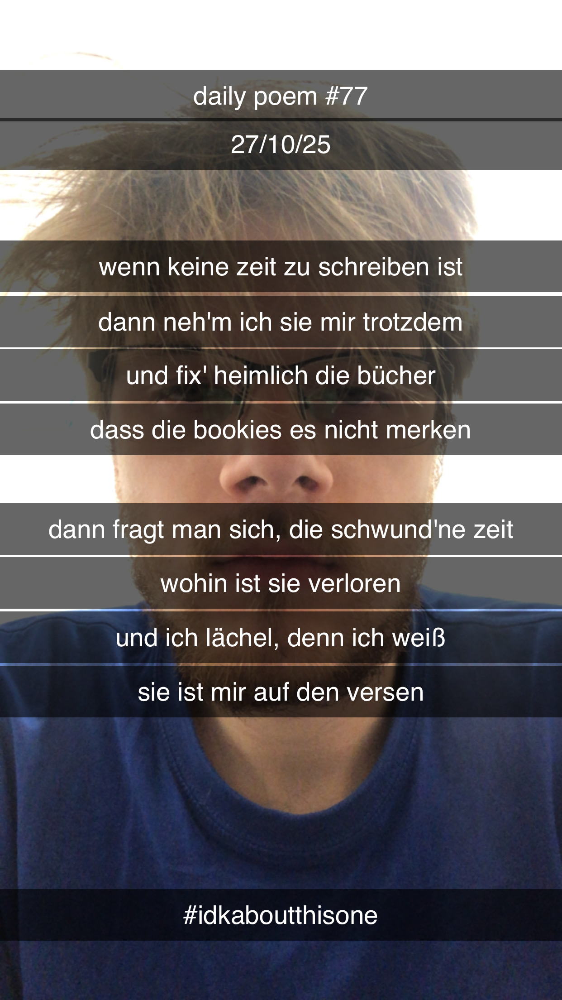

Zeit zu schreiben
[77]Wenn keine Zeit zu schreiben ist,
Dann nehm' ich sie mir trotzdem,
Und fix' heimlich die Bücher,
Dass die Bookies es nicht merken –
Dann fragt man sich, die schwund'ne Zeit,
Wohin ist sie verloren?
Und ich läch'le, denn ich weiß –
Sie ist mir auf den Versen.
